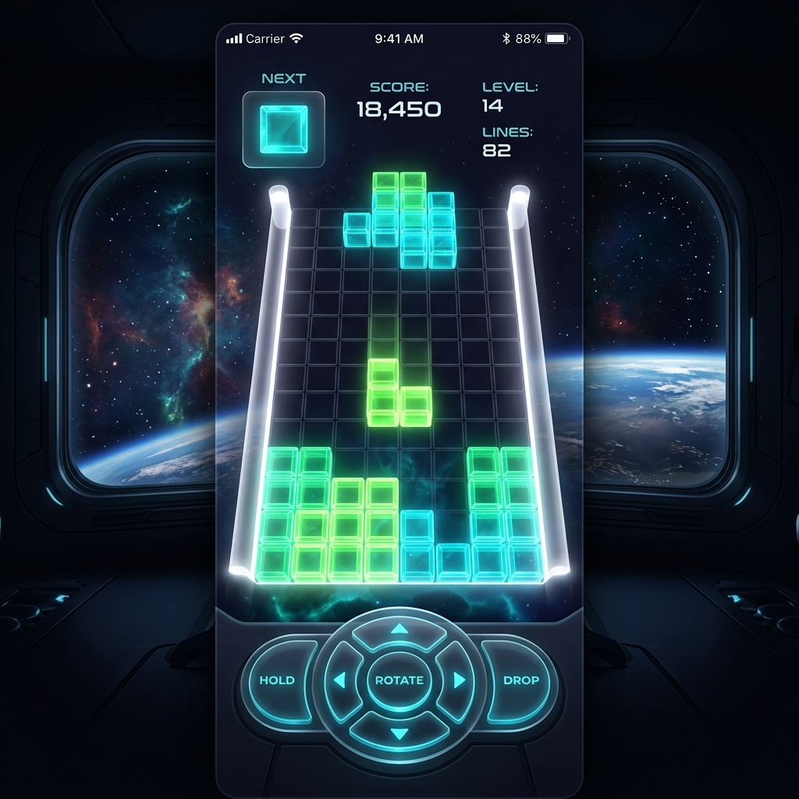
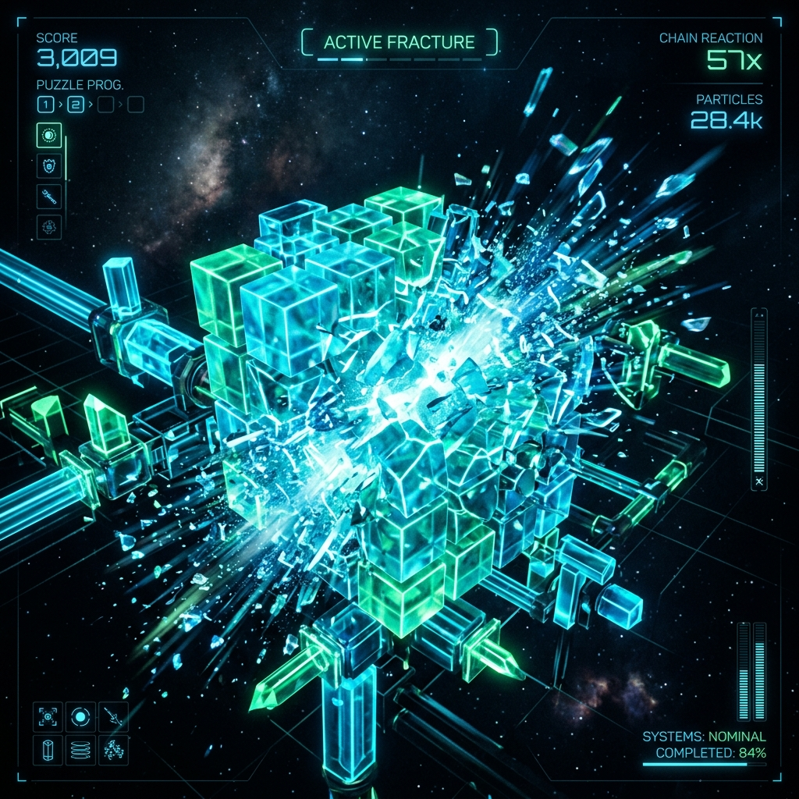

SceneKit 3D Board
A deep 3D stage with glowing rails, crystal blocks, light columns, and a responsive camera.

Lunar Block turns an expanded 14-by-20 playfield into a glowing orbital console built with SceneKit and UIKit. Experience fluid motion, outlines, responsive cameras, synthesized audio, and rich layered haptics.
Key Features
A deep 3D stage with glowing rails, crystal blocks, light columns, and a responsive camera.
Simultaneous physics-driven line fracture effects break cleared blocks into crystal shards.
A large circular D-pad controller with a central DROP button, gesture inputs, and keyboard support.
Synthesized gameplay sound effects and retro interactions created in real-time on-device.
Local score keeping, rank progression, XP tracking, and Game Center support for leaderboards.
Layered haptic impacts and localized vibrations on block rotation, drops, and line clears.
Watch crystal blocks shatter and fracture dynamically on line clears, creating satisfying spatial chain reactions.
